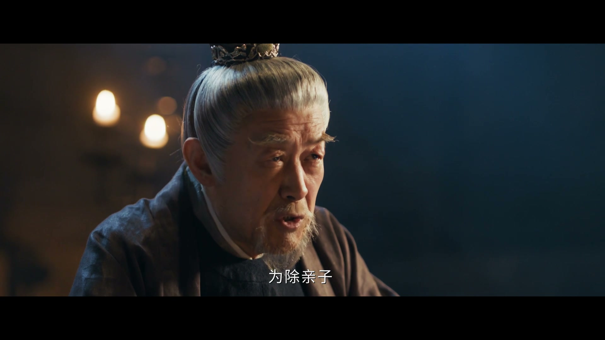
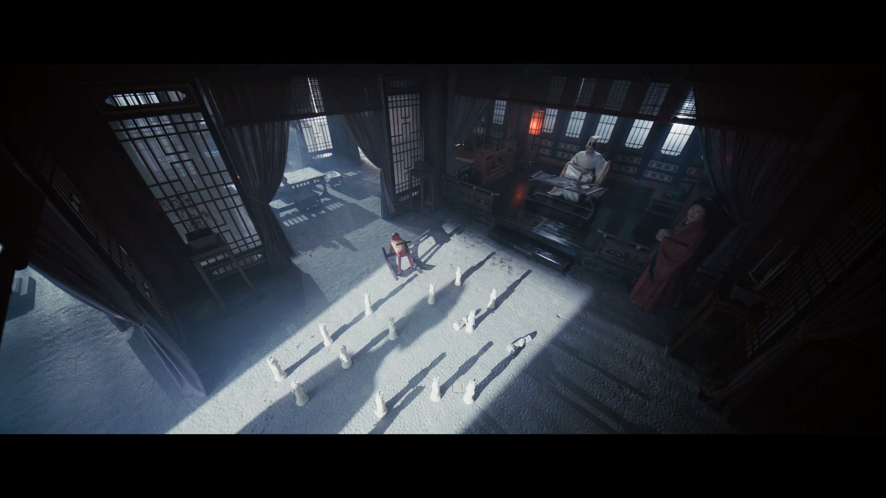
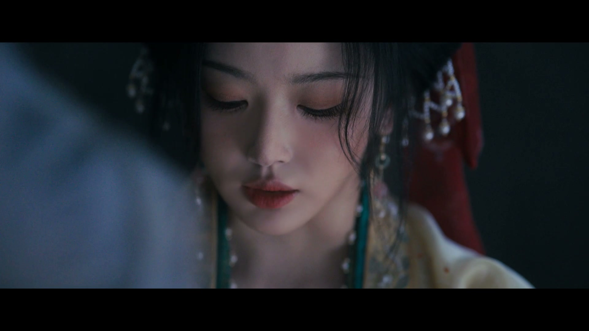
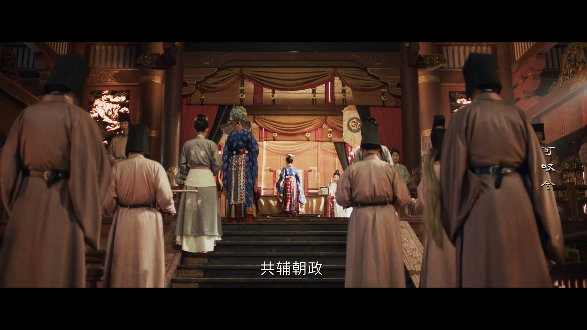
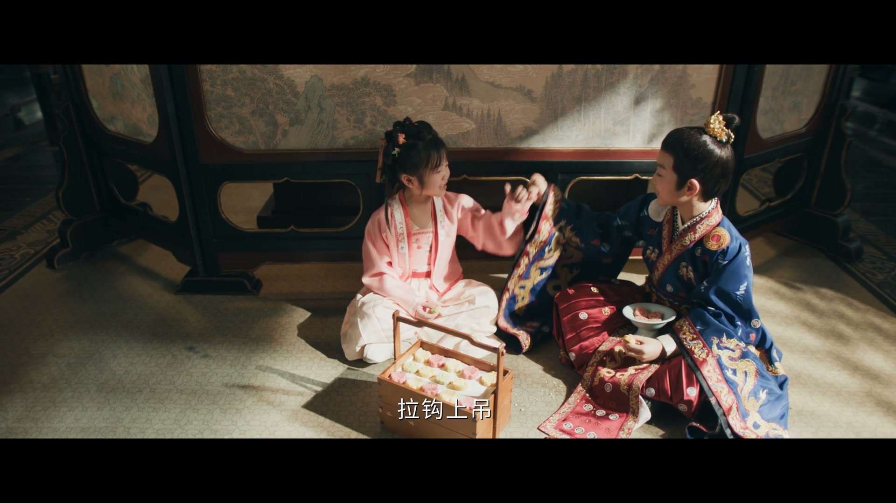
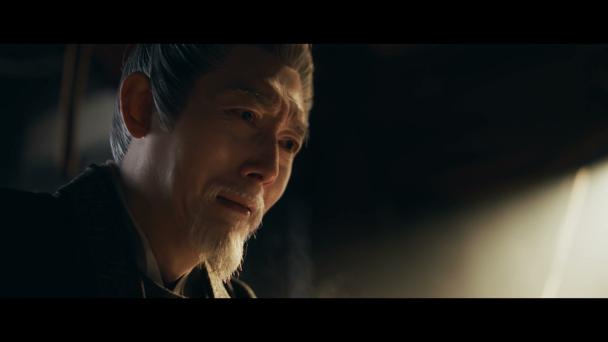
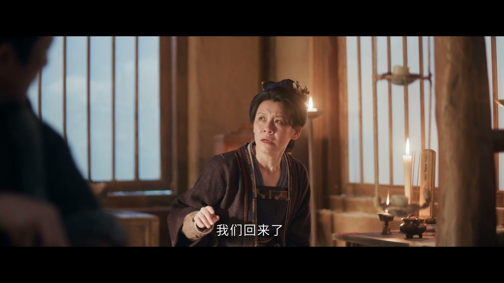
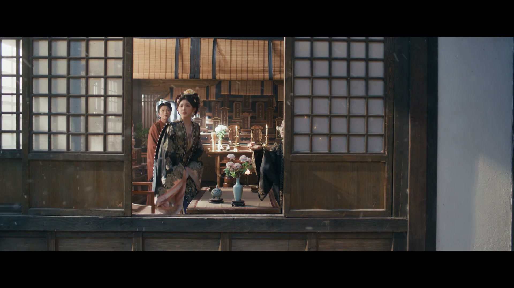
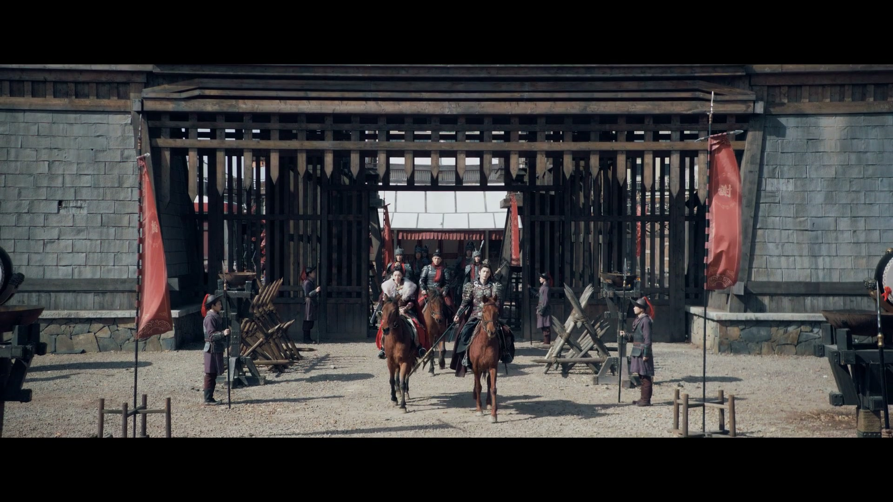
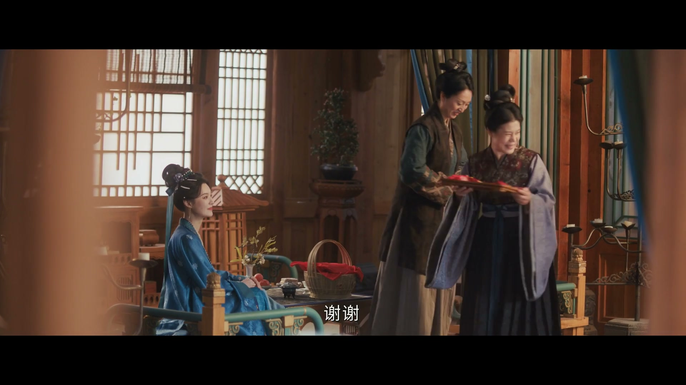

算计一生，抵不过一句「做个好人」
情境：魏严为权位逼宫篡位、陷害忠良，临终却自嘲自己不会再有来世。
遇到这种情况，可以这样做
- 面具戴久了，会忘了自己原本的样子。
- 为达目的「行不忍之事」，最后连自己都信不过。
- 善与恶的账，迟早要在临死前结算。

Drama Recap · 剧情图文总结
第 40 集 · 雪尽归家
大结局：十七年锦州旧案真相大白，魏严伏诛，新帝践祚，谢征受封摄政王、长玉受封怀化大将军一品护国夫人；夫妻衣锦还乡改口认亲，雪夜姻缘树下抛下红绸，北狄再犯时并肩出征——尘埃落定，雪地里捡回来的那个人，终与她白头同归
十七年前锦州旧案的最后一页，终于在雪落之前翻篇。魏严伏诛，新帝践祚，谢征受封摄政王，长玉受封怀化大将军、一品护国夫人。可对这对从雪地里走出来的夫妻来说，真正的结局不在金殿之上——衣锦还乡，改口认亲，雪夜姻缘树下抛上红绸；北狄再犯，她不肯退下战场，他一声「躲我身后」。大结局，尘埃落定，回到最初的家。
第 40 集（大结局），尘埃落定，回归家园。 魏严的一生被摊开在众人面前：先帝专权昏聩、忌惮贤德的承德太子，故意扶持假太子与十六皇子，太子奉命赴锦州那一刻就注定是死局；魏严打着「为江山社稷行不忍之事」的旗号逼宫篡位，将谋反之名安在替自己传假虎符的魏麒麟头上。十七年前的锦州旧案，终于水落石出。
剧里的鸡毛蒜皮，往往是人生的缩影。这些情节不只是故事——当你在现实中遇到同样的处境时，它们能提醒你：先做什么、别做什么、怎么说才有效。
情境：魏严为权位逼宫篡位、陷害忠良，临终却自嘲自己不会再有来世。
情境：魏严临终说长玉是唯一见到他真面目后不害怕的人，羡慕她身上有自己失去的「自在」。
情境：小皇帝掌权后说将来不会动摄政王和怀化大将军，还把江山许诺给心上人。
情境：长玉封了大将军衣锦还乡，街坊仍喊她「孩子」，她当场改口认干亲。
情境：人人都说姻缘树灵验，长玉和谢征半夜偷偷跑来抛红绸定情。
情境：北狄来犯，长玉不肯回临安，与谢征双双披甲出征。

十七年前的锦州旧案，在魏严伏诛前被彻底揭开：先帝专权昏聩、民不聊生，又忌惮贤德的承德太子，故意扶持假太子与十六皇子——太子奉命赴锦州的那一刻，就已注定是死局。魏严打着「为江山社稷行不忍之事」的旗号逼宫，掐着先帝的脖子逼他写下退位诏书，还把谋反的骂名安在替自己传假虎符的魏麒麟头上。
谢征复查旧案，得知魏麒麟一家当年并未被灭口，十七年的恩怨终于有了答案。走进囚室前，有人叹道：「幸好，谢征这把刀，找到了自己的刀鞘。」魏严望着这对夫妻，只留下一句自嘲：「来世做个好人吧——像我这样的人，只怕会躲入地狱，不会有来世了。」
关键台词 · KEY QUOTES

魏严的倒台，从一顿「上早茶」开始。他曾经权倾朝野，满朝文武跪着不敢抬头，他自嘲：「这个江山，终究只能指望臣。」他也曾亲手把梅子蜜饯、桂花酥送到被囚的先帝嘴边，明知故问：「皇上，你还认得清我是谁吗？」——送上的，是最后的断头点心。
轮到自己时，他望着来送行的人：「我以为你不会来了。」「普通死囚，上刑场时也要吃顿断头饭不是？」他舍不得浪费那碗热汤：「别浪费了你的一片心意。」高高在上一辈子，末了不过是想有人送他一程。
关键台词 · KEY QUOTES

魏严临终前，对樊长玉说出了此生最坦诚的话：「你是唯一一个，见到我脸之后不害怕的人。」他这一生戴惯了面具，却在长玉身上看到了自己渴求已久的东西——自在：「你原本也是有的，就在你面前，只是被你的面具遮住了。」
「樊将军，我是真的很喜欢你，因此，若还有来生，我希望我们不负相见。」谢征也向长玉坦白了自己最后的秘密：「我有个秘密，我是从一个很远很远的地方来的，我可能回不去了。」长玉只笑着回他：「若是太远，咱就不回去了，我们回临安，好好过日子。」
关键台词 · KEY QUOTES

永平十八年，宝儿之名正式录入皇家玉牒，更名祈玉。十年后新帝践祚、改元永兴，尊生母为明德皇太后、垂帘听政；追封故怀化将军魏麒麟为忠勇国公、孟书远为武肃侯；特命武安侯谢征为摄政王，樊长玉为怀化大将军、受一品护国夫人，共赴朝政。
三宫鼎立，朝野皆盛，海内清平。小皇帝俞宝儿坐在母亲身边，稚气地说：「朕将来掌权了，不必动摄政王和怀化大将军——无能的皇帝，才猜忌臣子。」满朝「万岁」声中，江山翻开了新的一页。
关键台词 · KEY QUOTES

新帝俞宝儿惦记着和樊长宁的约定。长宁小时候问他要个公主当，他不愿意，就许诺给她一个皇后，两人还拉了勾。这一日他缠着长宁：「你想不想当朕的皇后？」长宁反问：「你要拿皇宫给我当聘礼啊？」
宝儿一本正经：「这天下都是朕的，从你阿姐打仗的地方，到这皇宫，到更南边的地界，都是朕的。给朕当了皇后，这些就都是你的了。」说着伸出小指：「咱们拉个勾勾，拉勾上吊，一百年不许变，谁变谁是小狗。」稚子之言，成了日后金殿之上最贵重的婚约。
关键台词 · KEY QUOTES

与魏严同流合污的世家迎来清算。李家被抄家，祖父对孙儿交代：「边关征战连年，国库空虚，我们李家捐出全部家当，也算是待罪离宫。」孙儿含泪相劝：「李家所犯的是十恶不赦的大罪，若非圣上与摄政王手下留情，只怕早已被诛连九族。」
白发老臣瘫坐在地，一遍遍喃喃：「我做小人了，我做小人了……老夫十七年前，做小人了。」十七年前的锦州旧案，原来告密的小人不止一个。他被押往苦寒之地，命运的最后裁决，终于落下。
关键台词 · KEY QUOTES

长玉与谢征衣锦还乡，回到清平县。街上炸开了锅：「长玉回来了！快看大将军！」赵大叔、赵大娘老泪纵横：「黑了，瘦了，你这孩子受苦了，回来就好。」长玉在回来的路上一直琢磨着要改口，当众喊出：「干爹、干娘！」
两个老人连连摆手：「我们俩哪儿有这福报呢。」长玉却说：「赵老叔、赵老娘，我们全都回来了，以后我们一起伺候你们二老。」满屋子的热闹里独缺一人——赵大娘望着空着的位子，长玉知道，娘没能等到这一天。
关键台词 · KEY QUOTES

宫中，新帝俞宝儿拉着母亲的手：「陛下，您该换太后为母后了。」他早已把长宁当作家人。趁着母后高兴，他得寸进尺：「母后，这下宣个旨，问给长宁妹妹一个皇后！」
母后笑着摇头：「那你要先问问长宁妹妹愿不愿意呀。」宝儿理直气壮：「上次她问我要个公主当，我不愿意，就给她当了个皇后，长宁妹妹已经答应了，我们还拉过钩呢！」母后敛了笑：「那也不行，你们现在都还太小，等你加冠以后，你再去问长宁。」
关键台词 · KEY QUOTES
大雪时节，长玉与谢征悄悄溜回当年相遇的雪地渡口。那棵树早被乡人叫作姻缘树，说是怀化大将军和摄政王的姻缘，就是从这棵树开始的。两人像做贼一样半夜偷偷跑出来，长玉笑他：「让人看到我一个家主来这儿胡闹，不被人笑掉大牙？」
谢征把红绸抛上树梢，连抛几次都说「不算」，非要拿下来重扔。长玉看着挂上枝头的绸带：「你看，都不知道打的是谁的。」他难得认真：「但是我，这辈子、下辈子、生生世世，都打上了。」雪落无声，两段红绸在枝头缠在了一起。
关键台词 · KEY QUOTES

北狄再度来犯，急报传到军营。谢征想让人送长玉回临安：「夫人，我使人送你回临安吧。」长玉当即回绝：「说什么呢，我跟你一起！」他笑她胡闹，「多少年没上过战场了？」她不甘示弱：「少看不起我，我这怀化将军，可是没少打仗回来。来人，去取我铠甲来！」
出征前，谢征叮嘱：「若有危险，躲我身后。」长玉白他一眼：「都是两个孩子的娘了，成熟一点吧。」两人各自上马，齐声互道：「平安归来。」马蹄踏碎风雪，当年并肩杀敌的夫妻，再一次并肩而战。
关键台词 · KEY QUOTES

多年后，儿女成群。正儿在院子里练剑，练得格外用功——前几日被他父亲指出剑招不扎实，这几日除了吃饭睡觉念书，剩下的时间全在练剑。大人们笑他：「打小性子就这么执拗，半点不想认输，不像他爹，倒像他舅舅。」
长玉又有了身孕，肚子里这个皮实得很，鲜少有动静，她猜想是个不爱闹腾的闺女。孟将军家也添了喜事，长玉逗儿子真儿：「你觉得孟姨肚子里是弟弟还是妹妹？」「妹妹。」「那若是个妹妹，你就把她娶回家，给娘亲当儿媳妇。」孟姨果然生了个女儿——「要是个闺女，叫长玉」，上一辈的名字，成了下一辈的念想。
夜灯下，谢征与舅舅李怀安对酌，商议北狄战事。舅舅提醒他：「反攻北狄一事暂且搁下吧，待见到圣上，你再提出——圣上只会拿南方水灾之类的事推脱。」二十年前的圣上也如当今太子一般贤明，却始终提防着东宫与西北的异姓侯——朝堂上，新的博弈才刚刚开始。
关键台词 · KEY QUOTES
临安街头，一间酒楼。二人上楼，掌柜迎上来，彼此竟都觉得眼熟：「掌柜，你看着有些眼熟，我们俩是不是在哪儿见过？」「不知为何，你这么一说，我也有这种感觉——或许上辈子，我们真的是好姐妹。」
掌柜端来招牌雪蛤汤，贵人却一闻就反胃。众人打趣：「殿下素日最为礼贤下士，为何今日对一个酒楼掌柜如此抗拒？」侍女不解：「见了他，明明满心欢喜，却不能靠近，一靠近就想吐。」有人笑道：「这或许就是人们常说的，有缘无分吧。」镜头定格在两人相视一笑的脸上——哪有什么有缘无分，不过是另一个雪天，故事又要从头讲起。
关键台词 · KEY QUOTES
与谢征并肩揭穿十七年旧案；衣锦还乡改口认干亲；雪夜姻缘树下抛红绸；北狄再犯时披甲上阵，儿女双全仍不减当年英气。
执掌朝政、与舅舅对酌论天下；陪长玉夜访姻缘树，说出「生生世世都打上了」；出征前只叮嘱一句「若有危险，躲我身后」。
十七年旧案的真凶，伏诛前被送上断头饭；向长玉坦言「你是唯一一个见到我脸后不害怕的人」，最终认命，只求来世做个好人。
与俞宝儿两小无猜，许下「当皇后」的拉勾之约，未来皇后的模样初具雏形。
登基改元永兴，童言「无能的皇帝才猜忌臣子」；执意要给长宁封后，稚气的执拗里全是真心。
苦等孩子们归来，一句「回来就好」道尽半生牵挂；长玉改口认干亲，老两口又惊又喜。
小小年纪练剑如痴，被父亲点出剑招不扎实后埋头苦练，性子执拗，像足了舅舅。
梅子蜜饯、桂花酥，曾是魏严权倾时送过别人的毒点心；轮到自己，一碗热汤便是全部的体面。善恶到头终有报。
十七年孤刀复仇的武安侯，终于遇见了配得上他的长玉——一句点题，道尽两人一路走来的相互成全。
「干爹、干娘」四个字，让赵大叔赵大娘红了眼眶；满街的「长玉回来了」，比金殿上的封赏更动人。
半夜偷偷来抛红绸的两个人，一个说「生生世世都打上了」，一个嘴硬「不知道打的是谁的」——大雪、红绸、老树，成全了全剧最甜的画面。
「少看不起我」「躲我身后」「平安归来」——三句话，一对从雪地走到沙场、又并肩出征的夫妻。
第 1 集长玉从雪地里背回奄奄一息的谢征；大结局两人在当年相遇的雪地渡口、姻缘树下抛红绸。起点，就是归宿。
当年为救他当掉娘的银簪，如今他是她的刀鞘、她是他的刀——从市井屠户女到怀化大将军，她始终配得上他。
魏严的临终自嘲贯穿终局，十七年前的锦州旧案终于清算——算计一生的人，到最后连「来世」都不敢信。
宝儿与长宁孩提时的「一百年不许变」，早已为结局埋下伏笔——樊长宁，终将入主中宫。
明明满心欢喜却一靠近就想吐，被笑作「有缘无分」——更像在说，这段缘分生生世世都在重演，故事永远能从头讲起。